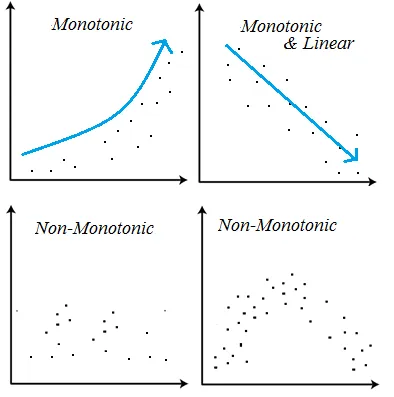

# get the data
df <- read.csv("data/green.csv")Types of correlation (4.3)
It is necessary to verify some aspects of the data in order to check the correlation between the variables.

| Aspect | Pearson | Spearman | Kendall |
|---|---|---|---|
| Type of relationship | Linear | Monotonic (any shape) | Monotonic (any shape) |
| Data assumptions | Continuous, normal, no outliers | Ordinal or continuous, any distribution, fewer assumptions | Ordinal or continuous, handles tied ranks well |
| Effect of outliers | Sensitive to outliers | Less sensitive | Least sensitive |
| Range | -1 to 1 | -1 to 1 | -1 to 1 |
| Use case | Linear relationships, normal data | Non-linear, monotonic relationships, or ordinal data | Small datasets, ordinal data, or data with ties |
We can use the same function in R for all these correlations. In the function cor.test(), we just need to change the parameter method to "pearson", "spearman" or "kendall".
Example
cor.test(formula = ~ VARIABLE_1 + VARIABLE_2, data = DATASET, method = "pearson")
cor.test(formula = ~ VARIABLE_1 + VARIABLE_2, data = DATASET, method = "kendall")
cor.test(formula = ~ VARIABLE_1 + VARIABLE_2, data = DATASET, method = "spearman")Pearson’s correlation for site DS
# separate the sites
df_siteDS <- subset(df, SITE == "DS")
# get the correlation
cor.test(formula = ~ TOTMASS + BURROWS, data = df_siteDS, method = "pearson")
Pearson's product-moment correlation
data: TOTMASS and BURROWS
t = 1.0428, df = 6, p-value = 0.3372
alternative hypothesis: true correlation is not equal to 0
95 percent confidence interval:
-0.4322803 0.8592175
sample estimates:
cor
0.3917155
Interpretation
Moderate Positive Correlation: The Pearson correlation coefficient of approximately 0.3917 indicates a moderate positive correlation between TOTMASS and BURROWS, suggesting that as one variable increases, the other tends to increase as well.
Not Statistically Significant: The p-value of 0.3372 indicates that this correlation is not statistically significant, meaning that it could easily arise due to random chance in this sample.
Confidence Interval: The confidence interval ranging from -0.4323 to 0.8592 includes zero, reinforcing the idea that there is insufficient evidence to conclude a true correlation exists in the population.
Spearman’s correlation for site DS
This correlation uses the Greek letter \(\rho\) (Rho).
# separate the sites
df_siteDS <- subset(df, SITE == "DS")
# get the correlation
cor.test(formula = ~ TOTMASS + BURROWS, data = df_siteDS, method = "spearman")Warning in cor.test.default(x = mf[[1L]], y = mf[[2L]], ...): Cannot compute
exact p-value with ties
Spearman's rank correlation rho
data: TOTMASS and BURROWS
S = 69.916, p-value = 0.6915
alternative hypothesis: true rho is not equal to 0
sample estimates:
rho
0.1676677
Interpretation
Weak Correlation: The correlation coefficient (rho = 0.1677) suggests a weak positive correlation between TOTMASS and BURROWS.
Not Significant: The high p-value (0.6915) indicates that this weak correlation is not statistically significant, meaning that there’s no strong evidence of a monotonic relationship between the variables in the sample.
Ties in Data: The presence of ties in the data affects the precision of the p-value calculation, but it does not change the interpretation that the relationship between TOTMASS and BURROWS is likely weak and non-significant in this case.
Kendall’s correlation for site DS
This correlation uses the Greek letter \(\tau\) (tau).
# separate the sites
df_siteDS <- subset(df, SITE == "DS")
# get the correlation
cor.test(formula = ~ TOTMASS + BURROWS, data = df_siteDS, method = "kendall")Warning in cor.test.default(x = mf[[1L]], y = mf[[2L]], ...): Cannot compute
exact p-value with ties
Kendall's rank correlation tau
data: TOTMASS and BURROWS
z = 0.12468, p-value = 0.9008
alternative hypothesis: true tau is not equal to 0
sample estimates:
tau
0.03636965
Interpretation
Very Weak Correlation: The tau value (0.03637) indicates a very weak positive correlation, suggesting that TOTMASS and BURROWS do not have a meaningful monotonic relationship.
Not Significant: The high p-value (0.9008) shows that the weak correlation is not statistically significant, leading to the conclusion that you cannot reject the null hypothesis that the true Kendall correlation is zero.
Ties in Data: As with the Spearman correlation, the presence of ties impacts the precision of the p-value calculation, but the interpretation remains consistent: the relationship between TOTMASS and BURROWS is weak and not significant.